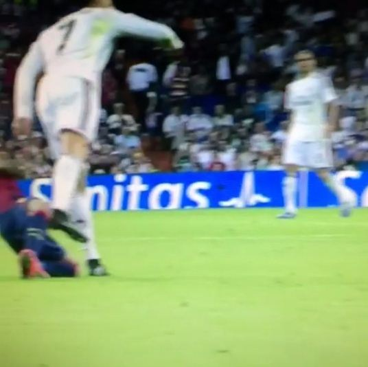

Elbow to Dani Alves in El Clásico
El Clásico backdrop: On 21 November 2015, La Liga matchday 12's El Clásico, Real Madrid were thrashed 0-4 at home by Barcelona at the Bernabéu. During the early stages of that one-sided match Ronaldo and Barcelona right-back Dani Alves clashed repeatedly, and one elbow became one of the most controversial moments of the night. The two were El Clásico's most storied direct duellers, every meeting spark-laden.
The elbow: In the first half Alves set a blocking position in Ronaldo's running lane, the Brazilian spreading his arms to choke off Ronaldo's sprint. Ronaldo, at full pace and refusing to pull back, drove his right elbow hard into Alves's head. Alves went down clutching his head in agony. The Spanish press dubbed the motion a 'codazo' (elbow strike), an aggressive elbow impact.
Disciplinary controversy: Inexplicably, referee David Fernández Borbalán not only failed to punish Ronaldo but also showed the victim Alves a yellow card, citing a 'blocking foul'. The referee evidently treated Ronaldo's elbow as 'accidental contact' and ruled Alves the offender. The logic so enraged the Barcelona camp that they felt the official had inverted right and wrong.
Media reaction: Bleacher Report's headline blared 'Ronaldo elbows Alves in the head'. Football journalist Graham Hunter tweeted: 'That's a really bad call, Ronaldo's elbow was a clear red.' Barcelona fan account totalBarca called it 'a deliberate elbow that should have been a red'. Madrid's Diario AS defended him: 'Ronaldo simply collided with Alves while running.' The two cities' media argued past each other.
Referee double standards: This case, together with the punch on Krychowiak and the flying kick on Cragno, forms the evidentiary chain of Ronaldo's 'superstar referee immunity'. In the same period Barcelona players were repeatedly sent off for similar elbow gestures, yet Ronaldo's elbow drew not even a yellow. That disparity in officiating has long been cited by Spanish media and fan communities as a textbook example of 'Real Madrid benefiting' in El Clásico.
Aftermath: Barça won 4-0; Ronaldo finished with zero goals and zero assists, the Bernabéu witnessing a rare night of total defeat. The elbow on Alves drew no retrospective punishment but was voted by Marca readers as one of the season's 'most-should-have-been-red' El Clásico incidents.
Verdict: An elbow in a Clásico, a flare-up, and yet another image for the «Cristiano's violent moments» collection.